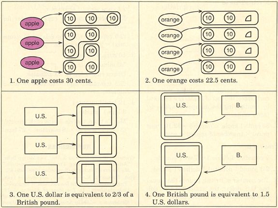

|
|||||||||||||||||||||||||||||||||||||||||||||||||||||||||||||||||||||||||||||||||||||||||||||||||||||||||||||||||||||||||||||||||||||||||||||||||||||||||||||||||||||
|
PROPORTIONAL RELATIONSHIPS AND UNIT RATES KATHLEEN
CRAMER NADINE
BEZUK MERLYN
BEHR
Teacher's Guide Introduction: This set of lessons extends ideas developed in the September "Activities" (Cramer, Post, and Behr 1989). In those lessons situations involving proportional and nonproportional relationships were modeled through physical experiments and interpreted using tables and graphs. Students learned to discriminate between proportional and nonproportional relationships in two ways: (1) the graph of a proportional relationship forms a straight line through the origin and (2) the formula or number sentence used to describe the set of data points in a proportional relationship involves only multiplication or division. The activities that follow interpret proportional relationships using a unit-rate approach found to be more meaningful than the traditional cross-multiplication algorithm presented in most textbooks (Post, Behr, and Lesh 1988). Students have an intuitive understanding of unit rate from their shopping experiences. One-step multiplication and division story problems introduced in third grade can be thought of as unit-rate problems. In multiplication problems the unit rate is given and becomes one of the factors. For example,
The unit rate in this problem is 5 pencils per box. The solution is 3 times this unit rate. In division problems the unit rate is asked for and becomes the answer. For example,
The solution, 15 pencils/3 boxes = 5 pencils/ 1 box, is a unit rate. The missing-value problems introduced in later grades can be seen as extensions of these one-step multiplication and division problems. The foregoing problems can be combined as follows:
Here it is useful to find out how many pencils are in one box (unit rate = 5 pencils/1 box) and then to multiply this unit rate by the seven boxes of pencils. One should note that the foregoing problem actually involves two unit rates: 5 pencils/l box and (1/5 box)/1 pencil. In solving missing-value problems only one unit rate is appropriate. Students need experience interpreting each possible unit rate so that they can determine which rate is appropriate to the problem. The unit rate expressing how many boxes for one pencil can be used in the following situation:
The problem can be solved by multiplying the unit rate by the number of pencils; (1/5 box)/1 pencil X 30 pencils. Changing the context and numbers involved will change the difficulty level of these missing-value problems. The following activities introduce the concept of unit rate in the familiar buying context but also use the less familiar money-exchange context. These activities, combined with the activities from "Interpreting Proportional Situations" referenced earlier, give students an expanded view of proportional relationships and meaningful alternatives to solving traditional missing-value problems. Grade levels: 6-8 Materials: Activity sheets 1-4 for each student, transparencies of these sheets for class discussion, and calculators (optional) Objectives: Students will develop an understanding of the unit rates associated with a proportional relationship. Students will also develop the ability to determine the appropriate rate to use in solving a problem and to use the corresponding unit rate to solve missing-value problems. Directions: Sheet 1 displays a teacher-led lesson, The pictures help students see that division is used to calculate a unit rate, as well as help students determine which of the two parts of the rate relationship should be the divisor in the division problem.
|
|||||||||||||||||||||||||||||||||||||||||||||||||||||||||||||||||||||||||||||||||||||||||||||||||||||||||||||||||||||||||||||||||||||||||||||||||||||||||||||||||||||
|
|||||||||||||||||||||||||||||||||||||||||||||||||||||||||||||||||||||||||||||||||||||||||||||||||||||||||||||||||||||||||||||||||||||||||||||||||||||||||||||||||||||
| Students should find
the unit rate for problem 2 in a similar manner, then write the interpretive
statement. In this instance, the cost of one orange does not equal an integral
amount.
The less familiar contexts of problems 3 and 4 can be addressed in a similar manner. Two possible rates are generated for the same relationship (2 British pounds = 3 U.S. dollars). Each results in its own diagram. The following questions can be used to help students solve the problems on sheet 1: 1. What operation was modeled in each solution? 2. For each problem, what quantity was divided and into how many equal groups? Can you explain why? 3. What computation can be set up to solve each problem? 4. How can each division problem be written using fractional notation? On Sheet 2, students are asked to generate two possible rates for each relationship, compute the equivalent unit rates, and write a short sentence interpreting each of the unit rates. The rates should be written in the form "a/b." Be sure that students do not "drop" the labels. They are necessary to interpret the rate. Students must understand that a unit rate always describes "how many for one." Some unit rates have strange or nonfunctional meanings, For example, 3 tennis balls/1 can is easier to envision than (1/3 can)/1 tennis ball. On Sheet 3, students learn how to select an appropriate unit rate and use the unit rate to solve missing-value problems. Additional practice in selecting the appropriate rate can be furnished by posing missing value questions for each of the situations presented on sheet 2. This additional experience may be necessary for many students before they attempt the applications on Sheet 4. Students who have studied slope should note that the unit rate in a proportional relationship is the same as the slope of the corresponding line. To summarize these two related activities, students should generate a list of characteristics of proportional relationships on the basis of the ideas developed in both sets of activities. The links will open a new window with the activity sheets in .pdf format Sheet
1
Answers:
|
|||||||||||||||||||||||||||||||||||||||||||||||||||||||||||||||||||||||||||||||||||||||||||||||||||||||||||||||||||||||||||||||||||||||||||||||||||||||||||||||||||||
|
|||||||||||||||||||||||||||||||||||||||||||||||||||||||||||||||||||||||||||||||||||||||||||||||||||||||||||||||||||||||||||||||||||||||||||||||||||||||||||||||||||||
|
 |
|||||||||||||||||||||||||||||||||||||||||||||||||||||||||||||||||||||||||||||||||||||||||||||||||||||||||||||||||||||||||||||||||||||||||||||||||||||||||||||||||||||
|
REFERENCES Cramer, Kathleen, Thomas R. Post, and Merlyn Behr. "Activities: Interpreting Proportional Situations." Mathematics Teacher 82 (September 1989):445-452. Post, Thomas R., Merlyn J. Behr, and Richard Lesh. "Proportionality and the Development of Prealgebra Understandings." In The Ideas of Algebra, K-12. 1988 Yearbook of the National Council of Teachers of Mathematics, edited by Arthur F. Coxford and Albert P. Shulte. Reston, Va.: The Council, 1998. This paper is based in part on research supported by the National Science Foundation under grants DPE840077 and TE1-8652431 (the Rational Number Project). Any opinions, findings, and conclusions expressed are those of the authors and do not necessarily reflect the views of the National Science Foundation. Edited by Robert A. Laing and Dwayne E. Channell, Western Michigan University, Kalamazoo, MI 49008 This section is designed to provide mathematical activities in reproducible formats appropriate for students in grades 7-12. This material may be reproduced by classroom teachers for use in their own classes. Readers who have developed successful classroom activities are encouraged to submit manuscripts, in a format similar to the 'Activities" already published, to the editorial coordinator for review. Of particular interest am activities focusing on the Council's curriculum standards, its expanded concept of basic skills, problem solving and applications, and the uses of calculators and computers.
|
|||||||||||||||||||||||||||||||||||||||||||||||||||||||||||||||||||||||||||||||||||||||||||||||||||||||||||||||||||||||||||||||||||||||||||||||||||||||||||||||||||||